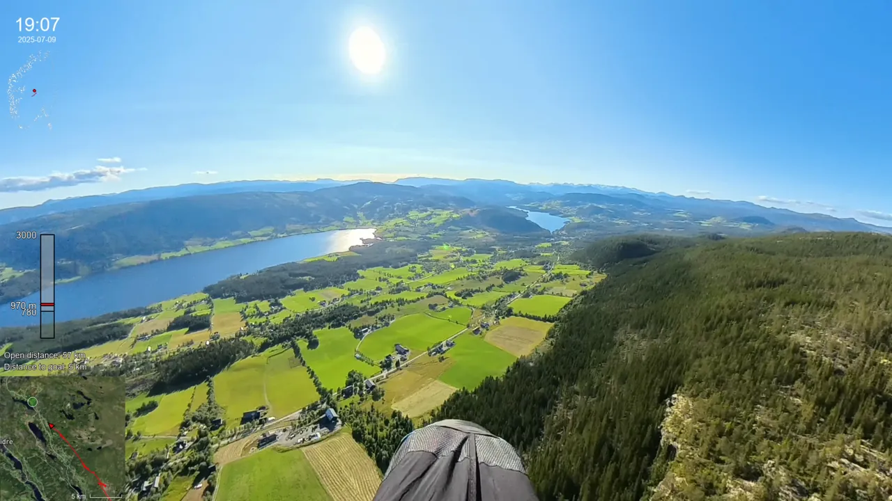
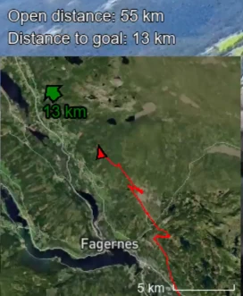
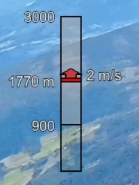
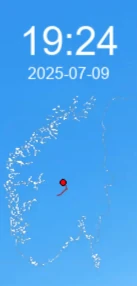
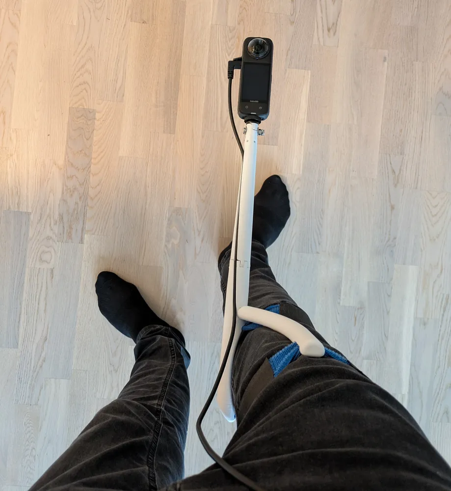
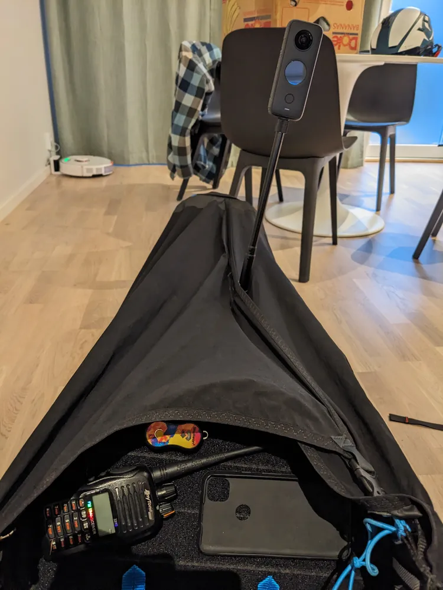

2025
Tracklog Animator
A tool I wrote that turns a paragliding GPS tracklog into an animation. Laid over the flight video, it shows live position, altitude and progress.

What the overlay shows
The animation is built from a few separate elements, each meant to keep the viewer oriented during the flight.



Filming
The footage was shot with a 360° camera on a 3D-printed mount strapped to my leg.

